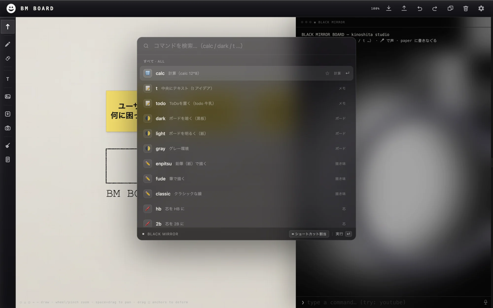
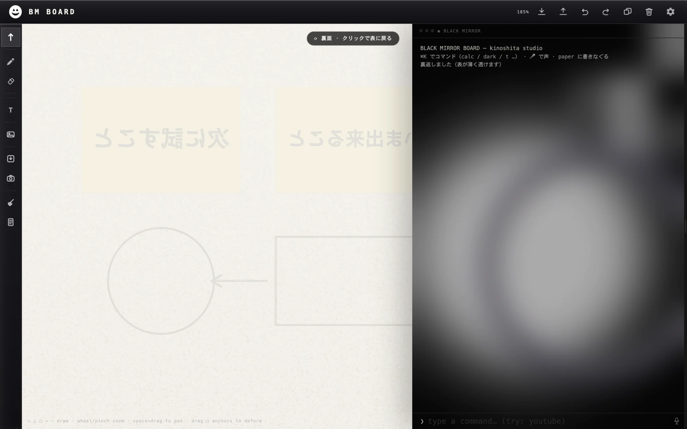
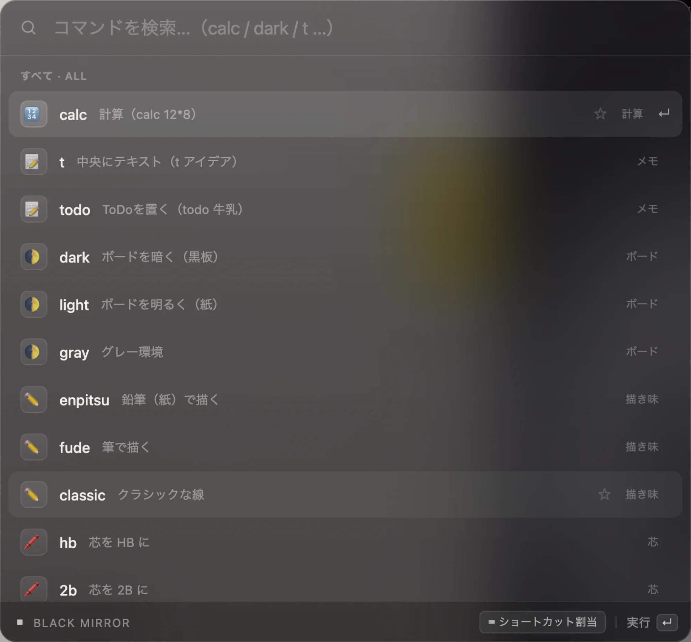
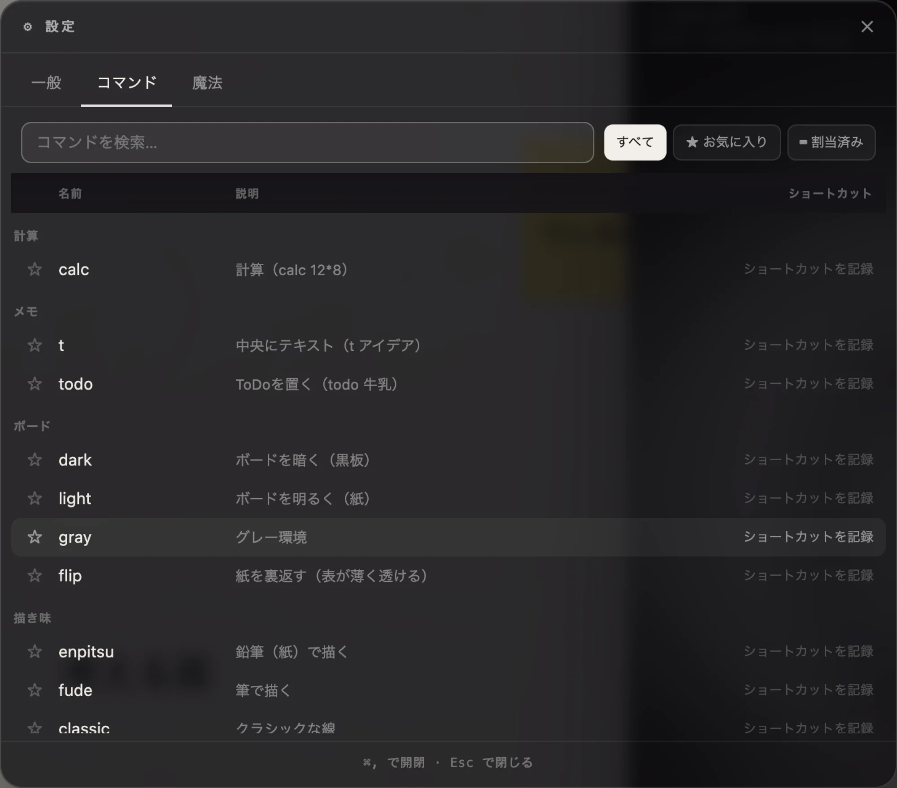
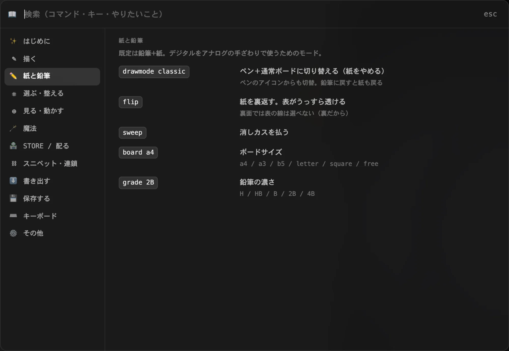

鉛筆で書きなぐり、紙を裏返し、消しカスを払う。
覚えるのは ⌘K ひとつだけ。アカウント登録なし・オフラインでも動く・無料。
Scribble in pencil, flip the sheet over, sweep away the crumbs.
One shortcut to remember: ⌘K. No account, works offline, free.

芯が紙の目に引っかかり、筆圧が重さになり、消した所には消しカスが残る。払ってもいいし、紙を裏返して裏に書き続けてもいい。表がうっすら透けるところまで、本物の紙と同じように。 The lead catches the grain, pressure reads as weight, and the crumbs stay where you rubbed. Sweep them away — or flip the sheet and keep writing on the back, with the front bleeding through, faintly.

⌘K を押して、やりたいことを打つ。候補が出て、最近使ったものが上に並び、自分でショートカットも割り当てられます。メニューを探す時間がなくなります。 Press ⌘K and type what you want. The palette suggests the rest, keeps what you used last on top, and lets you bind your own shortcuts.

魔法＝ボードの上でできることに、名前を付けたもの。並べたものを保存して何度でも置き直したり、桜を降らせるような動くものを作ったり。JSON で書き出せるので、そのまま人に配れます。 A spell is a name for something the board can do. Save an arrangement and place it again, or write something that makes cherry blossoms fall. Export it as JSON and hand it out.
選んで spell 名前。または AI に JSON を書かせて貼るだけ。Select, then spell name. Or let an AI write the JSON and paste it in.
その場でボードに走らせて確かめる。動く魔法もそのまま。Run it on the board right away — animated ones included.
📤 で提出 → 審査 → STORE に並び、全員が使えるようになる。Submit with 📤 → review → it lands in the STORE for everyone.
静的な JSON を読むだけ。維持費ゼロで回り続けます。Just a static JSON file. Zero running cost.
設定の「魔法」タブで、自作もインストールしたものも一覧に。✎ で名前・アイコン・説明をその場で編集し、📤 で提出用の JSON を全部込みで書き出せます。The Spells tab lists everything you made or installed. Edit the name, icon and description inline with ✎, then 📤 exports a submission-ready JSON.


開発者や、描くのが苦手な人のために。マウスを使わずに、選んで、動かして、つないで、揃える。For developers and anyone who finds drawing hard. Select, nudge, connect and align — without touching the mouse.
依存ライブラリなし・ビルド不要。オフラインでも動きます。No dependencies, no build step, works offline.
アップロードなし・アカウントなし。描いたものはあなたの手元に。No upload, no account. What you draw stays with you.
PNG / SVG / PowerPoint / GIF / 動画 で書き出し。Export as PNG, SVG, PowerPoint, GIF or video.
画面もコマンドの説明も、まるごと切り替わります。The whole interface switches, command hints included.
インストールもログインも要りません。Nothing to install. Nothing to sign up for.